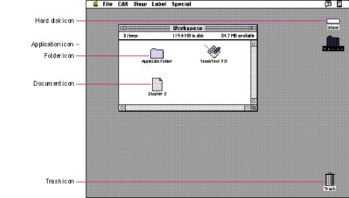

|
Chapter 8 - IconsThis chapter describes icons, their appearance, and their use in the Macintosh interface. It presents information on how to design icons and general guidelines for designing icons of different sizes and bit depths. This chapter also describes how to customize the standard icons you can provide for your products. |
|
|
Icons are graphic representations of objects such as documents, storage media, folders, applications, and the Trash. Icons look like their real-world counterparts whenever possible. People can select, open, move, copy, and throw away icons. Figure 8-1 shows some icons displayed in the Finder. |
|
Figure 8-1 Common icons
 Chapter Contents |